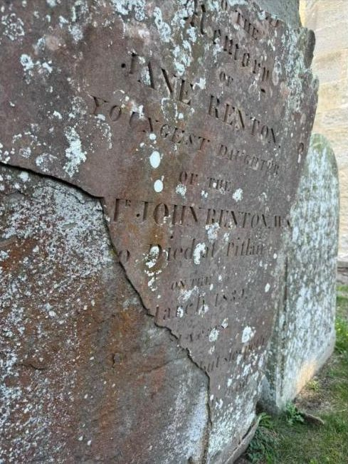
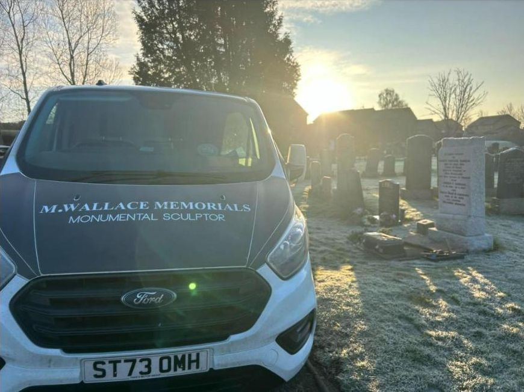
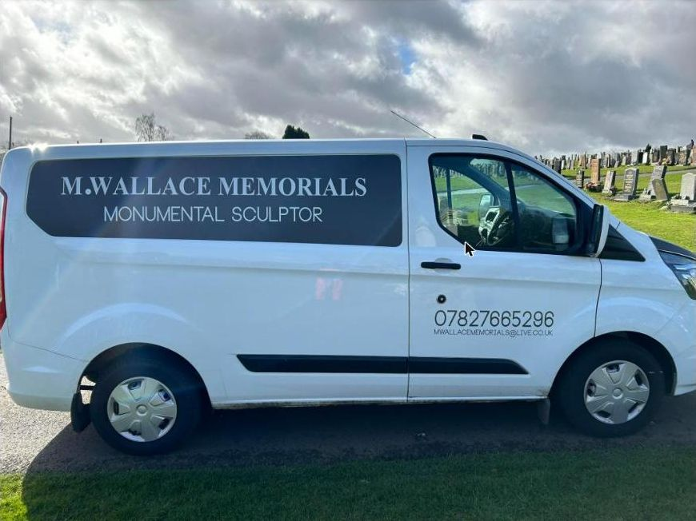

Monumental sculptor · Based in Kinross-shire
Headstone restoration & inscriptions in Renfrewshire & Inverclyde
Memorial cleaning, additional inscriptions and traditional lead lettering in cemeteries and kirkyards across Paisley, Renfrew, Johnstone and the rest of Renfrewshire & Inverclyde.
- Cleaning and restoration of granite, marble and sandstone
- New names added to existing stones, lettering matched
- Traditional raised and flush lead lettering, by hand
Recent work
Recent work
Elsewhere in Scotland
What we do
Caring for family memorials
Tap a service to see how it's done and examples of finished work.
The craft
How raised lead lettering is done
- Drawn by hand. The inscription is drawn straight onto the stone, matched as closely as possible to the letters already there.
- Anchored. Three to five small holes are drilled into each letter, angled up and down so the lead grips like a fish tail.
- Beaten in. Lead is hammered into each letter and flattened to the right thickness, then the inscription is drawn back on.
- Cut round. Every letter is trimmed with hand-made chisels of different sizes, with the curves shaped by eye.

How it works
From enquiry to finished stone
- 1
Get in touch
Use the form, call 07827 665296 or WhatsApp us. Tell us which cemetery the stone is in, and add a photo if you can.
- 2
Your price
We look at the stone and the lettering, talk you through what's involved and give you a price.
- 3
Work on site
The work is carried out in the cemetery, come rain or shine, so the stone stays where it is.
- 4
Finished
A clean, readable memorial, with new lettering that looks as if it was always there.


Reviews
What families say
✓ Recommends M. Wallace Memorials“Mark did an incredible job with my grandparents' headstone, adding the new inscription for my grandad, regilding the existing inscription and washing and moving the statue that was in situ. He worked really closely with us and nothing was too much. His work was first class. The stone had some irregularities from 25 years ago and wasn't on centre, and Mark worked really well to get the best solution to this. I can't recommend him highly enough.”
Eleanor G.Facebook recommendation
✓ Recommends M. Wallace Memorials“A massive thank you to Mark for the fantastic job done on my grandparents' gravestone. The second time he has put his skills to use, bringing the stone back to life and then updating the inscription after my gran's passing. Highly recommend Mark, great job done by a great guy!”
Scott B.Facebook recommendation
✓ Recommends M. Wallace Memorials“Did an excellent engraving on an existing grave stone. I would highly recommend Mark.”
Jim R.Facebook recommendation
✓ Recommends M. Wallace Memorials“Fantastic, quality service! Mark goes above and beyond to satisfy his customers. We would highly recommend him.”
Brenda W.Facebook recommendation
✓ Recommends M. Wallace Memorials“Great job, over the moon with the completed job and a great price too. Would highly recommend.”
Sharon H.Facebook recommendation
Areas we cover
Renfrewshire & Inverclyde
For Paisley, East Renfrewshire and down the coast to Greenock and Gourock, we try to line up jobs in the same area on the same trip. Send us a photo of the stone first and we can usually tell you what's involved before we come out.
- Paisley
- Renfrew
- Johnstone
- Erskine
- Newton Mearns
- Giffnock
- Barrhead
- Greenock
- Gourock
Elsewhere
Ready to talk about a stone?
A photo and the name of the cemetery are all we need to get started.